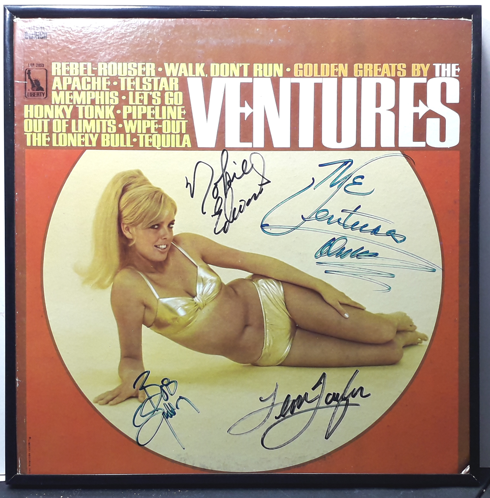

Miscellaneous
This lineup — Nokie Edwards, Don Wilson, Bob Spalding, and Leon Taylor — was together mainly in the early 2000s, roughly 2004–2005. The key point is that Bob Spalding became a regular member around 2004, Leon Taylor had already taken over drums in 1996, Don Wilson was still active, and Nokie Edwards was still appearing with the group during that period.
Product No. HEA-0323
$300
Shipping: $18.95
Description
Signed LP Album - Golden Greats by the Ventures
Full Description
The Ventures are an American instrumental rock band formed in Tacoma, Washington, in 1958. The group became one of the most influential instrumental bands in rock history and helped popularize the electric guitar sound of the early 1960s. The band was founded by guitarists Don Wilson and Bob Bogle. They were later joined by Nokie Edwards and drummer Mel Taylor, forming the lineup most closely associated with the group’s classic years. The Ventures achieved their breakthrough with the 1960 instrumental hit “Walk, Don’t Run.” They followed it with many other popular recordings, including “Perfidia,” “Hawaii Five-O,” “Wipe Out,” and “Apache.” Their music became known for crisp electric guitar work, strong rhythms, and a distinctive surf-rock and instrumental style. The group was especially popular in Japan, where they developed a large and devoted following. Their recordings also had a major influence on generations of guitarists and instrumental rock musicians. The Ventures were inducted into the Rock and Roll Hall of Fame in 2008. Although several original and longtime members have died, the group has continued performing with later members carrying on its musical legacy.
Condition
Excellent condition - Framed and ready for hanging.